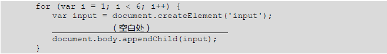
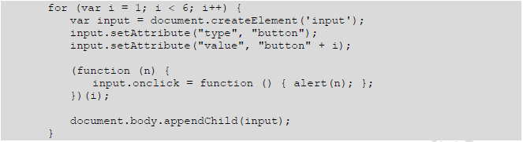
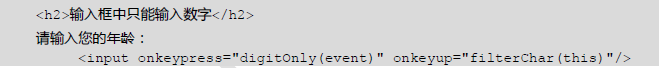
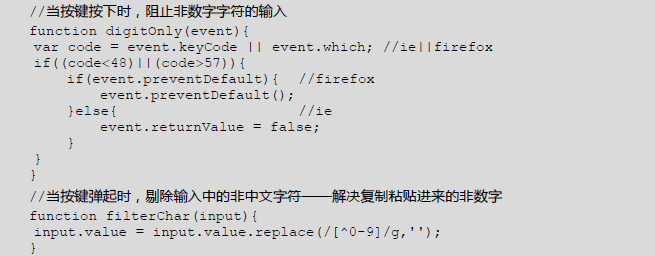

对于元素节点，获取其某属性的值有多种方式，如下所示：
1、通过HTML中的信息选取元素，比如：
2、通过CSS类选取元素
通过document对象选取，如：document.all、document.body等
通过节点遍历选取节点，如parentNode、firstChild等。
1、直接在HTML代码中添加，如：
<input type="button" onclick="funA();"></>
其中，funA()为一个有效函数。
2、在JS代码中添加，如：
btn.onclick = funA;
或者
btn.onclick = function(){...}
其中，btn表示按钮对象。
3、定义监听函数，代码如：
btn.addEventListener('click',function(){...});
window对象有很多子对象，除了document以外，还有如下常用子对象：
该代码在浏览器中运行时，点击段落中的文本"ClickMe",页面效果为？
先弹出"clickP,target=P",再弹出"clickDIV,target=P"。
单击段落中的文本"ClickMe",先触发<P>元素的onclick事件，且触发事件的元素为段落P，因此，先弹出"clickP,target=P;然后事件冒泡，触发<div>元素的onclick事件，再弹出"clickDIV,target=P"。
代码如下所示：
var id = setInterval(function(){
alert("Hello World!");
},1000);
setTimeout(function(){
clearInterval(id);
},5*1000);
使用JS代码为页面动态添加5个按钮，每个按钮上的文本为"botton1"、"button2"、"button3"。单击每个按钮时，分别弹出数字1、2、...5。代码如下：
为空白处填上代码，实现所需要功能。
参考代码如下：

页面有文本框，需要限制该文本框中只能录入数字，即：如果用户按下数字以外的其它键，文本框中无法录入；如果用户粘贴进非数字字符，也需要进行过滤。
请设计HTML代码以及JS代码，实现上述功能。
首先，需要为文本框定义onkeypress事件，用于在录入文本时做出判断；并为文本框定义onkeyup事件，用于过滤粘贴进来的文本。HTML代码如下所示：
JS代码如下所示：

1、使用超级链接，代码如下：
<a href="url"></a>
2、表单提交，代码如下：
<form action="url"></form>
3、js代码，代码如下：
location.href="url";
location.assign("url");
location.replace();
location.reload();
window.open("url");
history.go();